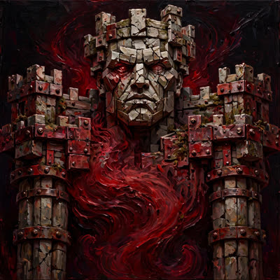

Hitung angkanya di titik sekat itu. Batas waktu penutupan jalur ditetapkan pukul 06.30 WIB. Pukul 06.40 — sepuluh menit penuh setelah gerbang resmi dinyatakan tertutup — ratusan orang masih berusaha menerobos pagar pembatas. Kalau jarak sepuluh kilometer ditempuh sampai dua jam seperti yang disindir di unggahan itu, artinya kecepatan rata-ratamu sudah jatuh ke angka jalan kaki santai. Pagar itu tidak salah pasang; langkah kakimu yang tidak muat di dalam jadwal lintasan.
Bröther, dengar ini baik-baik: kalau paru-paru dan betismu belum sanggup menebus sepuluh kilometer sebelum jam setengah tujuh pagi, terima nasibmu dan minggir dari aspal.
Yang paling memalukan dari keributan di Senayan ini bukan karena napas mereka habis di tengah jalan, tapi karena jam 06.40 mereka tiba-tiba punya sisa tenaga buat memanjat pagar pembatas dan mendorong-dorong petugas lapangan yang menjaga jalur! Waktu disuruh latihan berbulan-bulan kakinya berat, giliran disuruh curang melompati pagar demi medali, ototnya mendadak kuat semua.
Kericuhan JRF 2026 Kategori 10K Dipicu Peserta Terkena COP yang Memaksa Masuk Lintasan
Kericuhan antara ratusan pelari dan petugas mewarnai kategori 10K Jakarta Running Festival (JRF) 2026 di Istora Senayan pada Sabtu, 24 Oktober 2026, setelah peserta yang terkena Cut-Off Point pukul 06.30 WIB memaksa masuk dan melompati pagar pembatas.
indonesians.id
